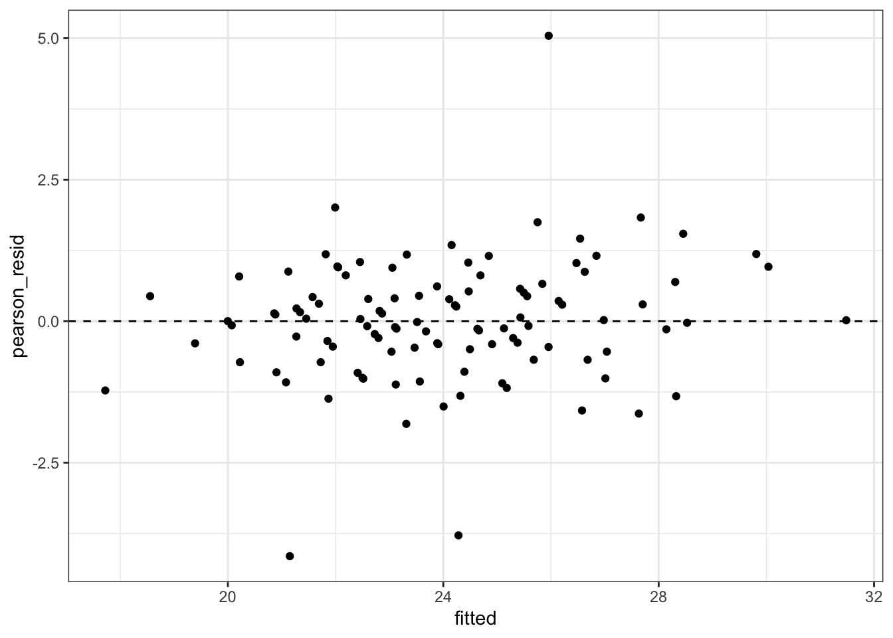
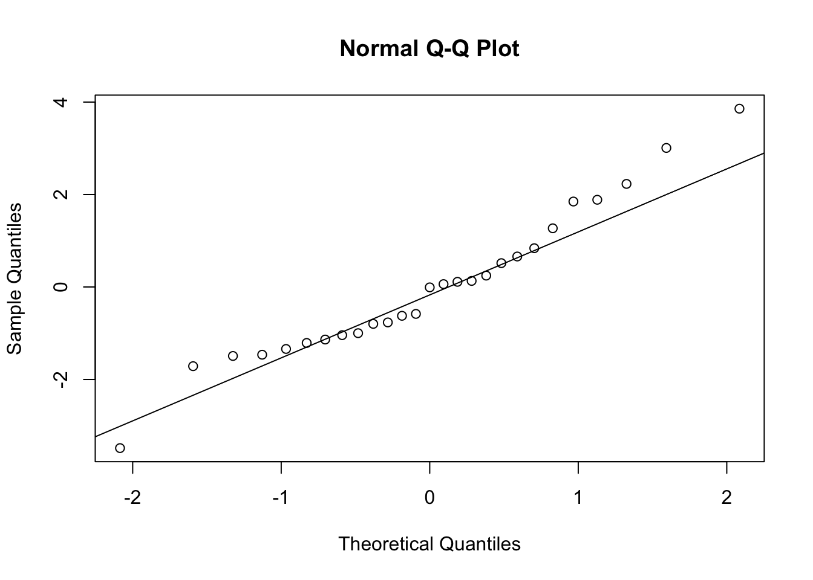

data("Orthodont", package = "nlme")
orth <- as.data.frame(Orthodont) |>
arrange(Subject, age) |>
group_by(Subject) |>
mutate(visit = row_number(), age_c = age - 8, age_f = factor(age)) |>
ungroup() |>
mutate(Subject = factor(Subject))3. Gaussian covariance models and linear mixed models
1. Aim
Gaussian marginal covariance models estimate population mean trajectories while representing within-subject dependence directly through \(\Sigma_i(\theta)\). Linear mixed models represent dependence through latent subject effects and target both population fixed effects and subject-specific predictions. Fixed-effect selection is compared under ML; covariance/random-effect estimation and final inference generally use REML when the fixed-effect design is unchanged.
2. Model specification
The marginal model is \[ Y_i\sim N\{X_i\beta,\Sigma_i(\theta)\}. \] Examples include CS, \(\Sigma_{jk}=\sigma^2\{(1-\rho)I(j=k)+\rho\}\); discrete AR(1), \(\Sigma_{jk}=\sigma^2\rho^{|j-k|}\); continuous AR(1), \(\sigma^2\rho^{|t_j-t_k|}\); Toeplitz, \(\Sigma_{jk}=\sigma^2\rho_{|j-k|}\); and unstructured \(\Sigma\).
The LMM is \[ Y_i=X_i\beta+Z_i b_i+\varepsilon_i,qquad b_i\sim N(0,D),\quad \varepsilon_i\sim N(0,R_i),\quad b_i\perp\varepsilon_i, \] so \(\operatorname{Var}(Y_i)=Z_iDZ_i^{\mathsf T}+R_i\) and \[ \widehat b_i=DZ_i^{\mathsf T}V_i^{-1}(Y_i-X_i\widehat\beta). \]
3. R packages/functions
nlme::gls()/lme() are idiomatic when residual covariance structures are primary. lme4::lmer() is idiomatic for flexible random-effects models; lmerTest and pbkrtest add Satterthwaite/Kenward–Roger inference; broom.mixed tidies parameters; influence.ME supplies cluster-deletion influence diagnostics.
4. Data
nlme::Orthodont contains four ordered measurements per subject. visit indexes equal occasion spacing; age is the actual continuous time.
5. Fit
Direct residual covariance models
mean_formula <- distance ~ Sex * age_c
ctrl <- glsControl(opt = "optim", msMaxIter = 200)
cov_models <- list(
independence = gls(mean_formula, orth, method = "REML", control = ctrl),
CS = gls(mean_formula, orth,
correlation = corCompSymm(form = ~visit | Subject),
method = "REML", control = ctrl),
AR1 = gls(mean_formula, orth,
correlation = corAR1(form = ~visit | Subject),
method = "REML", control = ctrl),
CAR1 = gls(mean_formula, orth,
correlation = corCAR1(form = ~age | Subject),
method = "REML", control = ctrl),
spatial_exponential = gls(mean_formula, orth,
correlation = corExp(form = ~age | Subject, nugget = TRUE),
method = "REML", control = ctrl),
unstructured = gls(mean_formula, orth,
correlation = corSymm(form = ~visit | Subject),
weights = varIdent(form = ~1 | age_f),
method = "REML", control = ctrl)
)
cov_comparison <- do.call(
rbind,
lapply(names(cov_models), function(nm) {
z <- cov_models[[nm]]
data.frame(model = nm, logLik = as.numeric(logLik(z)), AIC = AIC(z), BIC = BIC(z))
})
)
cov_comparison[order(cov_comparison$AIC), ]anova(cov_models$independence, cov_models$CS) # nested LRT; same fixed-effects designToeplitz covariance
nlme has no dedicated freely estimated Toeplitz corStruct. The exact idiomatic implementation below uses glmmTMB; the nlme::corARMA() family is stationary but is not, in general, the same parameter space as an unrestricted Toeplitz matrix.
if (requireNamespace("glmmTMB", quietly = TRUE)) {
library(glmmTMB)
toeplitz_fit <- glmmTMB::glmmTMB(
distance ~ Sex * age_c + homtoep(0 + age_f | Subject),
dispformula = ~0,
data = orth,
REML = TRUE
)
summary(toeplitz_fit)
} Family: gaussian ( identity )
Formula: distance ~ Sex * age_c + homtoep(0 + age_f | Subject)
Dispersion: ~0
Data: orth
AIC BIC logLik -2*log(L) df.resid
448.2 469.6 -216.1 432.2 100
Random effects:
Conditional model:
Groups Name Variance Std.Dev. Corr
Subject age_f8 5.283 2.298
age_f10 5.283 2.298 0.64
age_f12 5.283 2.298 0.70 0.64
age_f14 5.283 2.298 0.48 0.70 0.64
Number of obs: 108, groups: Subject, 27
Conditional model:
Estimate Std. Error z value Pr(>|z|)
(Intercept) 21.93238 0.43189 50.78 <2e-16 ***
Sex1 0.71635 0.43202 1.66 0.0973 .
age_c 0.63659 0.06739 9.45 <2e-16 ***
Sex1:age_c 0.16070 0.06745 2.38 0.0172 *
---
Signif. codes: 0 '***' 0.001 '**' 0.01 '*' 0.05 '.' 0.1 ' ' 1Fixed-effect and random-effect selection
m_mean_reduced_ml <- lmer(distance ~ Sex + age_c + (age_c | Subject),
data = orth, REML = FALSE)
m_mean_full_ml <- lmer(distance ~ Sex * age_c + (age_c | Subject),
data = orth, REML = FALSE)
anova(m_mean_reduced_ml, m_mean_full_ml) # fixed effects: MLm_ri_reml <- lmer(distance ~ Sex * age_c + (1 | Subject), data = orth, REML = TRUE)
m_rs_reml <- lmer(distance ~ Sex * age_c + (age_c | Subject), data = orth, REML = TRUE)
AIC(m_ri_reml, m_rs_reml) # same fixed effects: REML comparisonfinal_lmm <- m_rs_reml
summary(final_lmm)Linear mixed model fit by REML ['lmerMod']
Formula: distance ~ Sex * age_c + (age_c | Subject)
Data: orth
REML criterion at convergence: 435.4
Scaled residuals:
Min 1Q Median 3Q Max
-3.1681 -0.3859 0.0071 0.4452 3.8495
Random effects:
Groups Name Variance Std.Dev. Corr
Subject (Intercept) 3.23394 1.7983
age_c 0.03252 0.1803 -0.09
Residual 1.71621 1.3100
Number of obs: 108, groups: Subject, 27
Fixed effects:
Estimate Std. Error t value
(Intercept) 21.91236 0.41244 53.129
Sex1 0.70327 0.41244 1.705
age_c 0.63196 0.06737 9.381
Sex1:age_c 0.15241 0.06737 2.262
Correlation of Fixed Effects:
(Intr) Sex1 age_c
Sex1 -0.185
age_c -0.396 0.073
Sex1:age_c 0.073 -0.396 -0.185Multilevel/crossed effects and nonlinear trajectories
# Crossed clustering example covered by the multilevel-model extension.
data("Penicillin", package = "lme4")
crossed_lmm <- lmer(diameter ~ 1 + (1 | plate) + (1 | sample), data = Penicillin)
summary(crossed_lmm)Linear mixed model fit by REML ['lmerMod']
Formula: diameter ~ 1 + (1 | plate) + (1 | sample)
Data: Penicillin
REML criterion at convergence: 330.9
Scaled residuals:
Min 1Q Median 3Q Max
-2.07923 -0.67140 0.06292 0.58377 2.97959
Random effects:
Groups Name Variance Std.Dev.
plate (Intercept) 0.7169 0.8467
sample (Intercept) 3.7311 1.9316
Residual 0.3024 0.5499
Number of obs: 144, groups: plate, 24; sample, 6
Fixed effects:
Estimate Std. Error t value
(Intercept) 22.9722 0.8086 28.41# Nonlinear mixed growth curve: subject-specific asymptote.
data("Loblolly", package = "datasets")
start_nls <- getInitial(height ~ SSasymp(age, Asym, R0, lrc), data = Loblolly)
nlmm_growth <- nlme(
height ~ SSasymp(age, Asym, R0, lrc),
data = Loblolly,
fixed = Asym + R0 + lrc ~ 1,
random = Asym ~ 1 | Seed,
start = start_nls
)
summary(nlmm_growth)Nonlinear mixed-effects model fit by maximum likelihood
Model: height ~ SSasymp(age, Asym, R0, lrc)
Data: Loblolly
AIC BIC logLik
239.4859 251.64 -114.7429
Random effects:
Formula: Asym ~ 1 | Seed
Asym Residual
StdDev: 3.650644 0.7188625
Fixed effects: Asym + R0 + lrc ~ 1
Value Std.Error DF t-value p-value
Asym 101.44874 2.4616422 68 41.21181 0
R0 -8.62744 0.3179514 68 -27.13446 0
lrc -3.23374 0.0342697 68 -94.36129 0
Correlation:
Asym R0
R0 0.704
lrc -0.908 -0.827
Standardized Within-Group Residuals:
Min Q1 Med Q3 Max
-2.23603495 -0.62387017 0.05914274 0.65725280 1.95791547
Number of Observations: 84
Number of Groups: 14 Satterthwaite and Kenward–Roger denominator df
if (requireNamespace("lmerTest", quietly = TRUE)) {
final_lt <- lmerTest::lmer(
distance ~ Sex * age_c + (age_c | Subject), data = orth, REML = TRUE
)
anova(final_lt, ddf = "Satterthwaite")
anova(final_lt, ddf = "Kenward-Roger")
}if (requireNamespace("pbkrtest", quietly = TRUE)) {
kr_full <- lmer(distance ~ Sex * age_c + (age_c | Subject), orth, REML = TRUE)
kr_reduced <- lmer(distance ~ Sex + age_c + (age_c | Subject), orth, REML = TRUE)
pbkrtest::KRmodcomp(kr_full, kr_reduced)
}large : distance ~ Sex * age_c + (age_c | Subject)
small : distance ~ Sex + age_c + (age_c | Subject)
stat ndf ddf F.scaling p.value
Ftest 5.1186 1.0000 25.0000 1 0.03261 *
---
Signif. codes: 0 '***' 0.001 '**' 0.01 '*' 0.05 '.' 0.1 ' ' 1Boundary test for one variance component
ri_ml <- lmer(distance ~ Sex * age_c + (1 | Subject), orth, REML = FALSE)
ols_ml <- lm(distance ~ Sex * age_c, orth)
lr_ri <- max(0, 2 * (as.numeric(logLik(ri_ml)) - as.numeric(logLik(ols_ml))))
p_mixture <- 0.5 * stats::pchisq(lr_ri, df = 1, lower.tail = FALSE)
c(LR = lr_ri, p_50_50_mixture = p_mixture) LR p_50_50_mixture
4.960270e+01 9.412714e-13 6. Extract & interpret
fixef(final_lmm)(Intercept) Sex1 age_c Sex1:age_c
21.9123580 0.7032670 0.6319602 0.1524148 as.data.frame(VarCorr(final_lmm))ranef(final_lmm)$Subject |> head() # BLUPs/conditional modesconfint(final_lmm, parm = "theta_", method = "profile") 2.5 % 97.5 %
.sig01 1.105809 2.4887325
.sig02 0.000000 0.3385631
.sig03 -1.000000 1.0000000
.sigma 1.097032 1.5884934ri_only_icc <- icc_random_intercept(m_ri_reml)
ri_only_icc[1] 0.6318389if (requireNamespace("broom.mixed", quietly = TRUE)) {
broom.mixed::tidy(final_lmm, effects = c("fixed", "ran_pars"), conf.int = TRUE)
}Fixed effects describe the conditional mean at \(b_i=0\), which equals the population mean under the identity link. Random-intercept and random-slope variances quantify unexplained between-subject heterogeneity; their correlation describes association between baseline level and change. BLUPs are shrunken subject predictions, not observed subject parameters. The random-intercept ICC is \(\tau_0^2/(\tau_0^2+\sigma^2)\); with random slopes, correlation is time-dependent and a single ICC is inadequate. Satterthwaite/KR output reports approximate denominator df; base lmer() reports no p-values by design.
7. Diagnostics
lme4::isSingular(final_lmm, tol = 1e-4)[1] FALSEfinal_lmm@optinfo$conv$lme4$messagesNULLdiag_df <- data.frame(
fitted = fitted(final_lmm),
conditional_resid = resid(final_lmm),
pearson_resid = resid(final_lmm, type = "pearson")
)
ggplot(diag_df, aes(fitted, pearson_resid)) + geom_point() + geom_hline(yintercept = 0, lty = 2)
qqnorm(diag_df$conditional_resid); qqline(diag_df$conditional_resid)
re <- ranef(final_lmm)$Subject
qqnorm(re[["(Intercept)"]]); qqline(re[["(Intercept)"]])
vg <- Variogram(cov_models$AR1, form = ~age | Subject, resType = "normalized")
plot(vg, smooth = TRUE)
if (requireNamespace("influence.ME", quietly = TRUE)) {
infl <- influence.ME::influence(final_lmm, group = "Subject")
head(sort(cooks.distance(infl), decreasing = TRUE))
}[1] 0.31274688 0.13727388 0.11629945 0.11008371 0.08223782 0.03808181For singular or nonconvergent fits: rescale/center time, inspect observations per random coefficient, simplify random-effect correlations with (1 + age_c || Subject), compare optimizers, and retain complexity only when scientifically and empirically supported.
8. Caveats
- Compare fixed-effect mean structures under ML. REML likelihoods from different fixed-effect column spaces are not comparable; compare covariance/random-effect structures under REML only with the same fixed effects.
- LRTs are justified for nested models; AIC/BIC may compare nonnested covariance structures but do not account for selection uncertainty.
- For a single variance component under a regular scalar boundary problem, the asymptotic null is \(\tfrac12\chi_0^2+\tfrac12\chi_1^2\), not plain \(\chi_1^2\). Multiple components or unidentified correlations require a different mixture or parametric bootstrap.
- SAS
PROC MIXEDoften requestsDDFM=KRorDDFM=SAT; baselmer()supplies neither automatically.lmerTestdefaults to Satterthwaite unless changed. - Wald CIs for variance parameters are unreliable near zero; prefer profile-likelihood or bootstrap intervals.
nlme::corCAR1()andcorExp()use actual time distances;corAR1()uses integer occasion gaps.nlmedoes not natively expose unrestricted Toeplitz covariance; theglmmTMBhomogeneous Toeplitz termhomtoep()is an explicit R-vs-SAS implementation difference. Usetoep()when occasion-specific marginal variances are required.- Multilevel random effects require enough independent levels at each hierarchy; a factor with only a few levels should ordinarily be fixed. Nonlinear mixed models are sensitive to starting values and parameterization.
- Source-backed: model-building order, covariance choices, REML/ML, boundary tests, BLUPs, and diagnostics follow the source notes. Standard-practice additions:
broom.mixed,influence.ME, andglmmTMBToeplitz syntax replace or extend SAS output.
9. Source references
/Users/wenbinwu/Documents/UNC/26Spring/BIOS767/Lecture-Notes/BIOS-767-Part-007.pdf, pp. 5–31 and 50–61 (correlated Gaussian model, estimation, covariance structures)./Users/wenbinwu/Documents/UNC/26Spring/BIOS767/Lecture-Notes/[Important] BIOS-767-Part-009.pdf, pp. 4–18, 77–91, and 99–119 (mean/covariance selection; CS, AR, unstructured; ML/REML)./Users/wenbinwu/Documents/UNC/26Spring/BIOS767/Lecture-Notes/BIOS-767-Part-010.pdf, pp. 5–24, 40–58, and 62–73 (LMM, covariance decomposition, BLUPs, ICC)./Users/wenbinwu/Documents/UNC/26Spring/BIOS767/Lecture-Notes/BIOS-767-Part-011.pdf, pp. 4–25 and 42–54 (random-effect tests, boundary, fixed-effect inference, KR/Satterthwaite)./Users/wenbinwu/Documents/UW/25Winter/STAT571/notes/2.0 - LMM_1.pdf, pp. 2–16 and 27–32;/Users/wenbinwu/Documents/UW/25Winter/STAT571/notes/2.1 - LMM_2.pdf, pp. 1–19 and 24–29 (LMM, BLUP, ML/REML, inference)./Users/wenbinwu/Documents/UW/25Winter/STAT571/notes/2.3 - LMM_4.pdf, pp. 1–16 (serial correlation and diagnostics);/Users/wenbinwu/Documents/UW/25Winter/STAT571/notes/2.4 - LMM_Review.pdf, pp. 1–3 (boundary tests and review)./Users/wenbinwu/Documents/UNC/26Spring/BIOS767/Assignments/UNC-BIOS767/analysis_Fumin/767HW5.Rmd, code chunkdata-prepand diagnostic chunks (R random intercept/slope, BLUP, residual and influence code)./Users/wenbinwu/Documents/UNC/26Spring/BIOS767/Lecture-Notes/BIOS-767-Part-016.pdf, pp. 4–23 (multilevel/clustered models);/Users/wenbinwu/Documents/UNC/qualify-exam/resources/notes/BIOS_767_Weideman_Typed_Notes_with_Examples.pdf, p. 90 (nonlinear mixed models).